Bertry Outdoor 2010

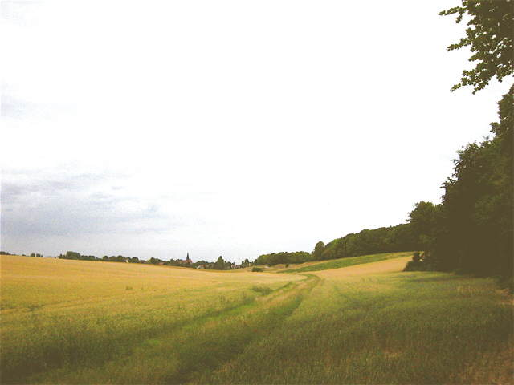
Bertry, ils ont déjà organisé un Indoor cet hiver, et ils remettent ça avec leur 3ème Outdoor... Sur la route, je m'arrête pour déjeuner dans la belle campagne picarde, un coin tranquille, les blés sont encore assez verts. Mais plus loin, je trouverai des moissonneuses à l'action !

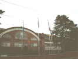
Plus haut dans le Nord, c'est le pays de la betterave, les sucreries sont d'énormes usines à l'architecture bien dessinée...

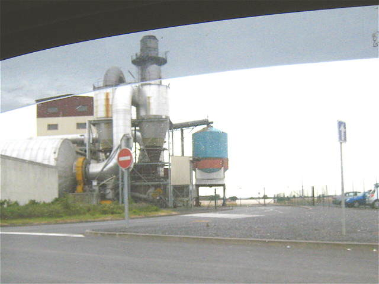
En sortie, une énorme machinerie, sans doute pour sécher, épurer et distribuer le sucre dans la trémie à charger les camions...

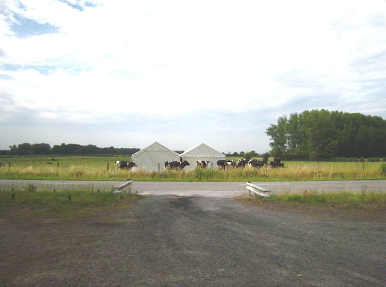
Vendredi vers 17 h, j'arrive au terrain. Les vaches ont forcé la barrière et envahi le champ des barnums, déjà montés !

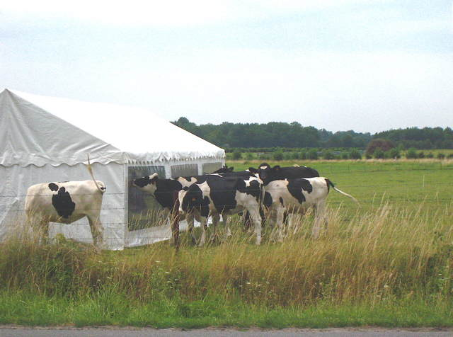
Elles se regardent dans la glace (souple, heureusement) et goûtent un peu les festons du haut...

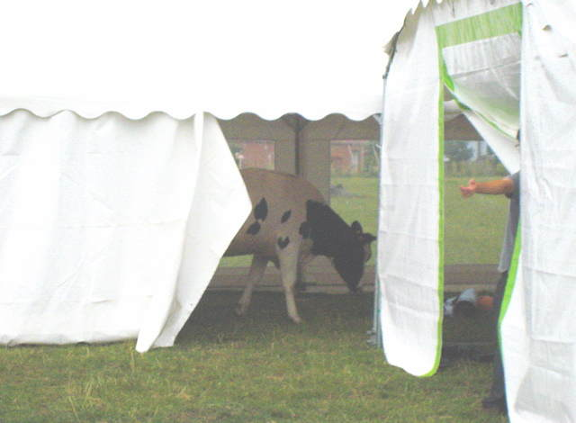
Mais le barnum n'était pas complètement fermé, certaines sont entrées, il fait soleil, dehors ! Christophe, alerté, expulse les 7 ou 8 bêtes au péril de sa vie, et peut-être pas assez calmement... Les dégâts sont quand même limités, quelques trous de cornes et... des bouses d'affolement à nettoyer demain... Un prélude Vachettes imprévu et dont Christophe se serait bien passé !

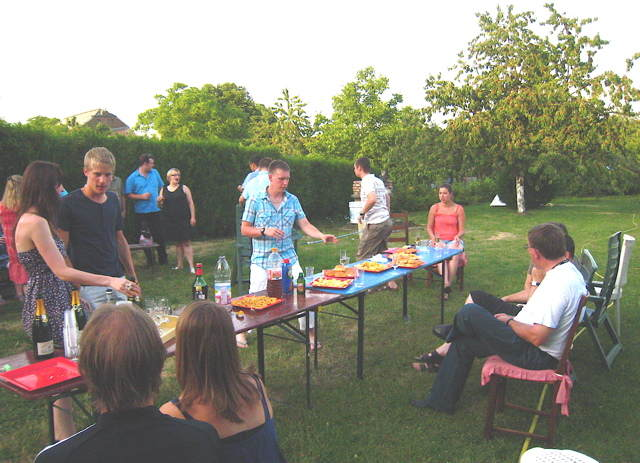
Comme je suis là, avec Laurent, de Troyes, je donne un coup de main administratif ! Et au soir, hospitalité du Nord oblige, je suis invité au pot d'Alix dont les parents arrosent le bac... apparemment improbable pour eux !

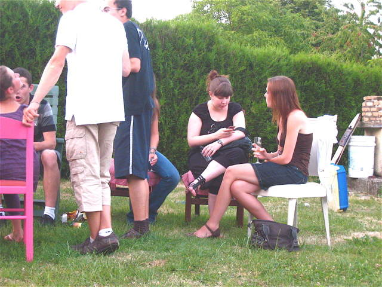
L'hospitalité n'est pas un vain mot, toutes les beautés du coin viennent nous faire la bise comme à de vieux amis...

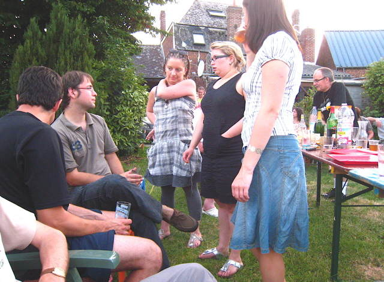
Christophe Enderlé et son épouse peuvent décompresser un peu après le stress de la préparation ! Ensuite, ils nous offriront à la friterie un bon croque-monsieur au Maroilles, Mmmmm !

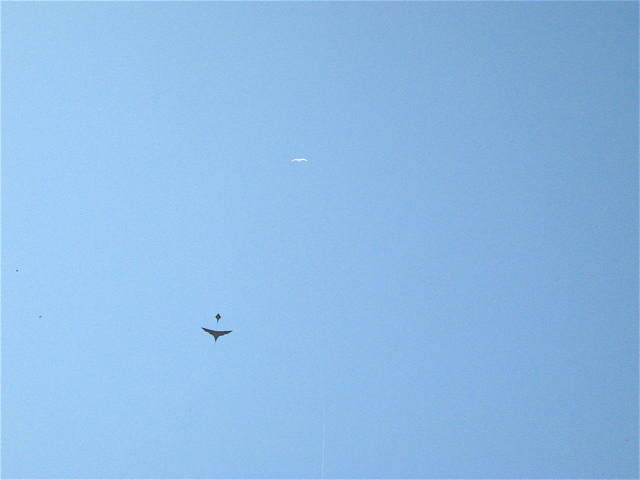
Samedi matin, avant les thermiques inévitables, un petit vent lisse et régulier... Je monte mon Spiralier, et Laurent son canard stylisé...

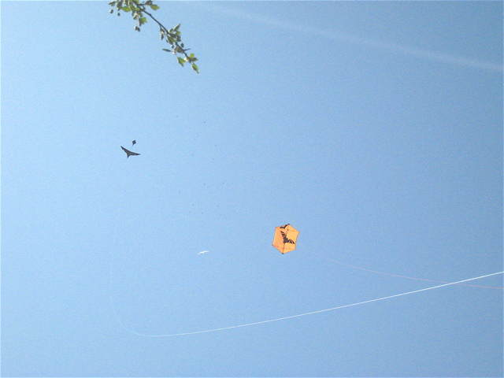
François Périault arrive d'une autre rencontre, il a dormi une heure cette nuit ! Mais il joint quand même son grand Rokkaku orange à notre flottille...

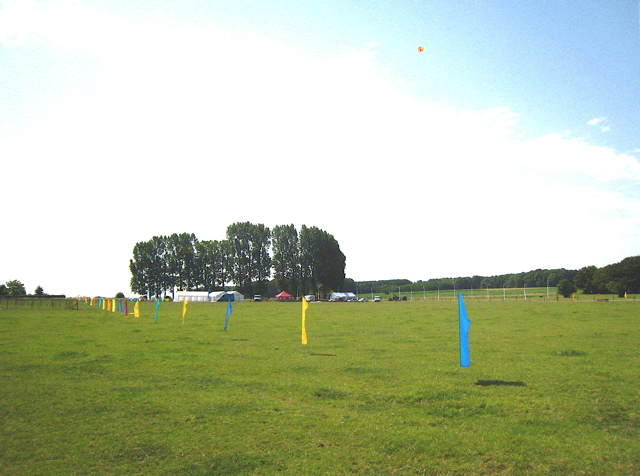
Le terrain est vaste et bien plat, bien décoré, les barnums nombreux... Seuls quelques bouquets d'arbre perturbent le vent en bas...

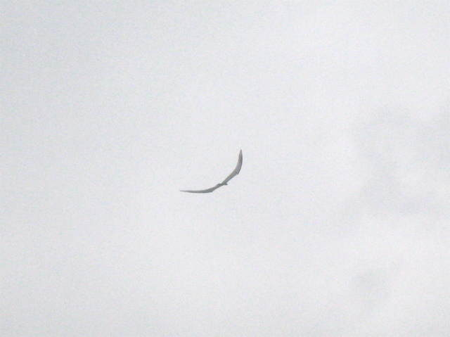
Le vent est monté un peu, mon Spiralier commence à souffrir, je vais sortir mon Albatros...

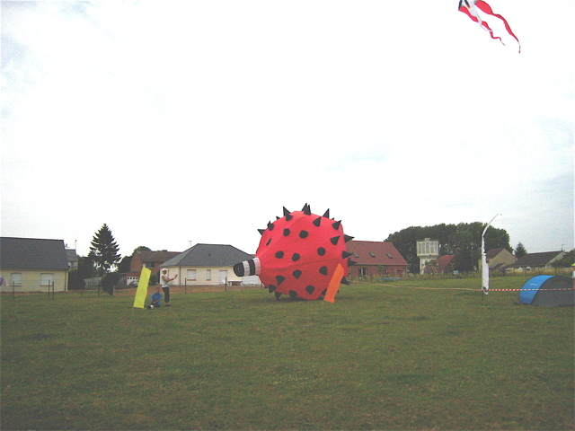
Au sol, un gros Fugu s'est gonflé pour le grand plaisir des enfants !

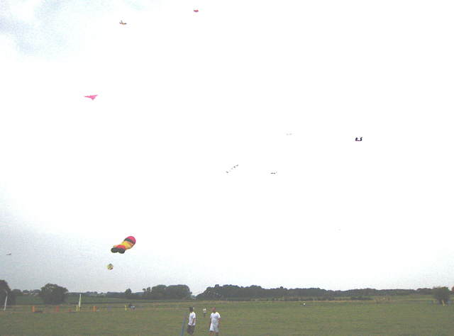
Il y aura finalement pas mal de cerfs-volants en l'air, bien que les membres du club pratiquent surtout le Deux-lignes...

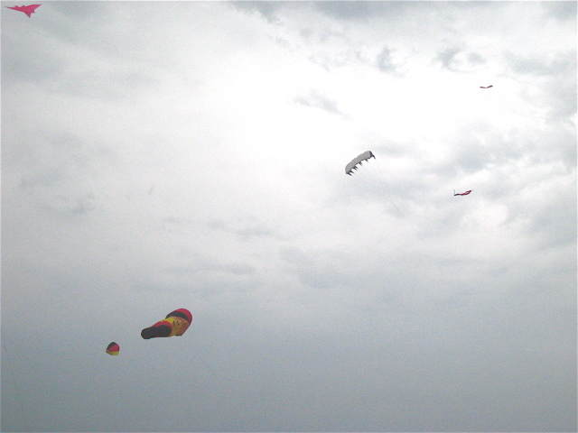
On voit là un petit bonhomme comme ceux rencontrés à Soissons, le flow-form de l'Antenne de Beauce, difficile à régler depuis que son passage à Hirel sur la ligne électrique a occasionné des trous brûlés..., le Jimmy-Pentagon rose de Michelle l'Higuinen, et d'autres cerfs-volants que je n'identifie pas !

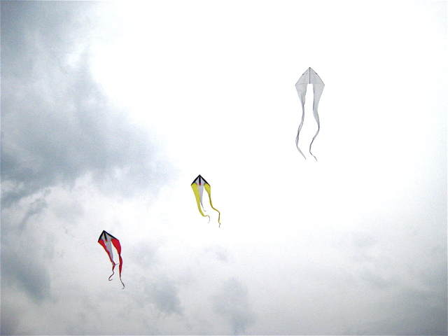
Ici, le grand Pyrodelta blanc de Patrick, et des pyros du commerce, bien alignés !

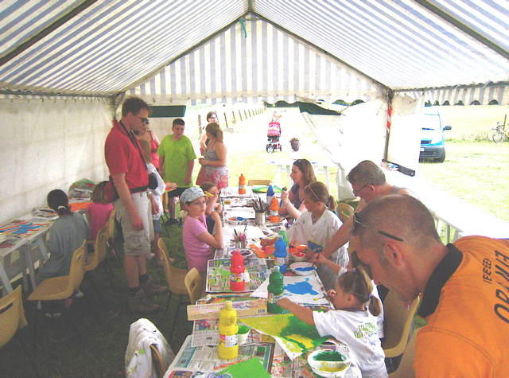
Un atelier pour enfants, qui construit des Eddies...

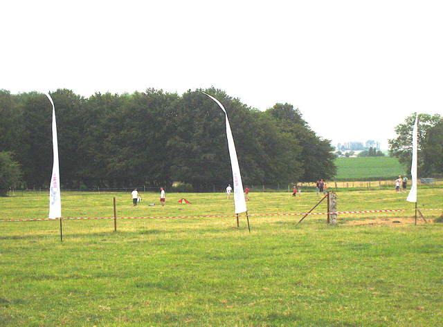
Les enfants peuvent faire voler leurs créations dans la prairie d'à-côté, on l'a séparée par une clôture électrique, la seule chose que les vaches respectent !

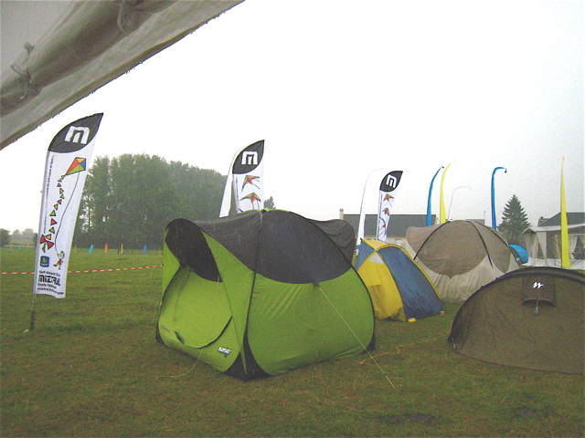
François et moi avons nos cerfs-volants là-haut (Rokkaku et Albatros), mais il se met à tomber des cordes et l'orage arrive... Je m'abrite dans le grand barnum, plus étanche que mon abri de plage et, de là, je vois nos deux cerfs-volants partir au gré du vent. La ficelle du Rokkaku s'accroche dans des arbres, et il finit par tomber sous les trombes d'eau !

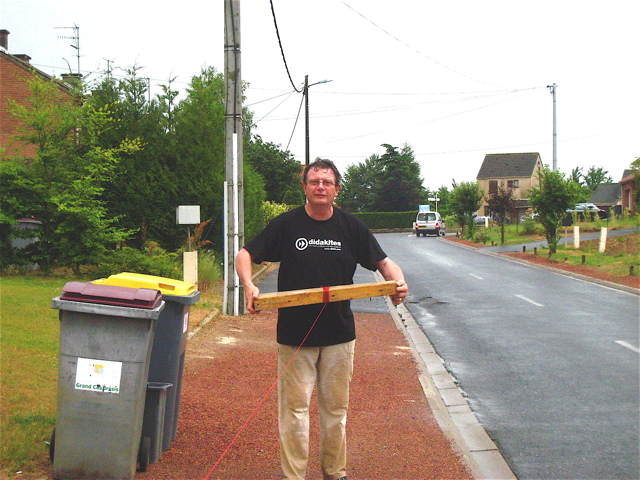
François a récupéré son cerf-volant et enroule la ficelle sur un bout de bois qu'il a trouvé, pour pouvoir l'arracher de l'emprise des arbres, à 30 m de haut... Il gagnera ! Par contre, on retrouve grâce à une voisine obligeante la place où est tombé l'Albatros, mais il reste juste sur place 2 m de ficelle ! J'espère que les jours prochains m'apporteront des nouvelles heureuses...

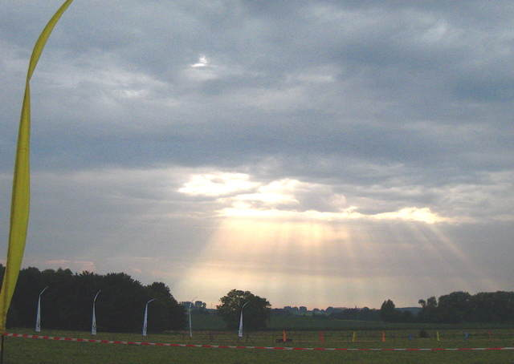
Le temps s'améliore, mais malgré de nouvelles recherches, pas plus d'Albatros... Tant pis, demain, il fera jour !

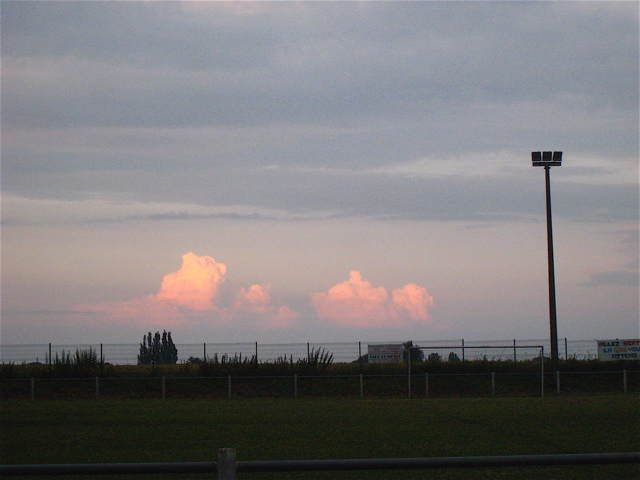
Ca y est, un grand trou bleu apparaît à l'horizon, de beaux cumulus s'y développent aussitôt, il y a beaucoup d'humidité et le soleil tape toujours dur, là-bas !

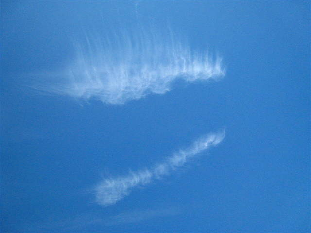
Dimanche matin, le beau temps est revenu... Les traînées d'avion s'élargissent progressivement dans le ciel, mais il fera très chaud aujourd'hui, avec quand même un vent honnête sans plus...

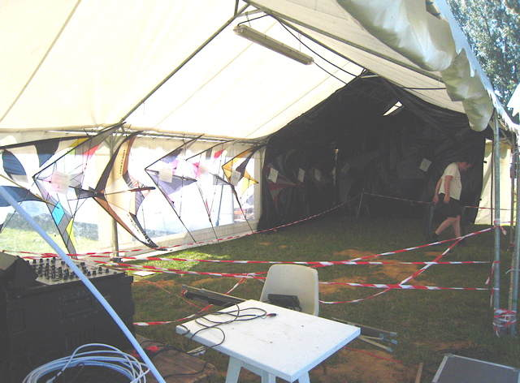
Dans le barnum, déserté par les vaches, Christophe a monté sa collection de pilotables, chacun avec sa fiche explicative ! A gauche la sono, dont on se passerait bien, avec ses musiques de boîte de nuit et techno, et un volume pénible à supporter...

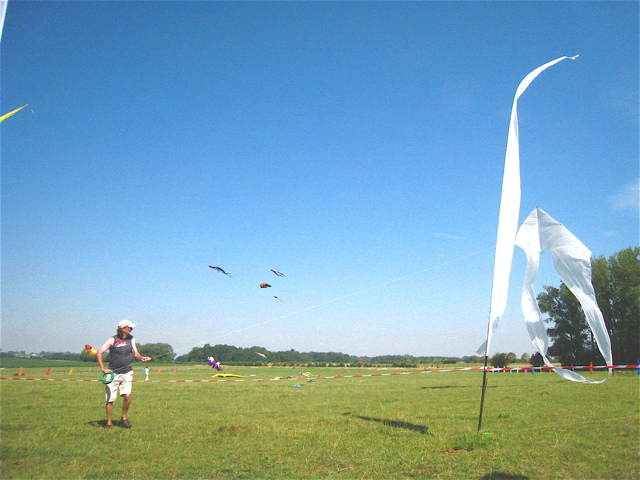
Le vent tombe, puis repart, au gré des thermiques qui passent. Le flow-form de Beauce ne peut rester sans surveillance malgré nos essais de réglage... Patrick relance son Pyro blanc...

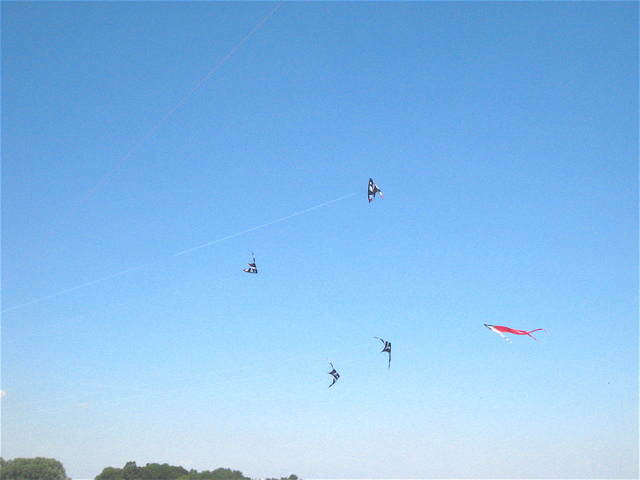
Alix a reçu de ses parents pour son Bac un beau Tramontana comme celui des copains et le club de Bertry peut maintenant voler en team homogène...

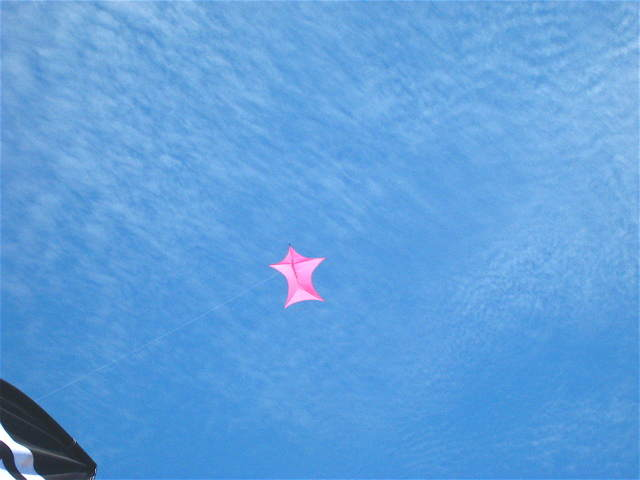
Vent limité, idéal pour le Jimmy ! L'après-midi de cerf-volant va bien continuer, je ferai voler ma grue faute d'Albatros. Mais mon appareil photo est tombé en panne, un classique de l'Ixus : "Erreur d'objectif". Je ne débloquerai la chose que le lundi matin, après avoir bidouillé tous les boutons... Pourvu que ça dure, maintenant ! Dommage pour le reportage abrégé !
Bertry Outdoor 2010 : Troisième édition de ce festival qui ne manque pas de moyens ni de bonnes volontés ! Les vaches et l'orage ont bien un peu essayé de contrecarrer l'enthousiasme de Christophe, mais finalement, un festival accueillant et intéressant, à revoir !